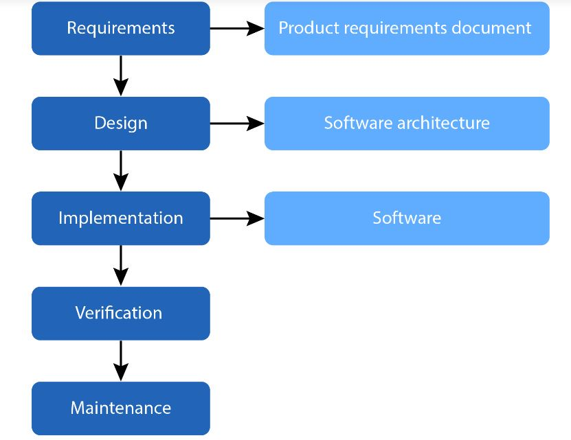

Importance of Secure Software Development
 In today's digital age, software is ubiquitous and integral to virtually every industry. Consequently, the security of software systems has become paramount. Cyberattacks have grown in frequency and sophistication, targeting software vulnerabilities to gain unauthorized access, steal sensitive data, disrupt services, or cause financial damage. Secure software development mitigates these risks by embedding security measures throughout the SDLC, creating robust and resilient software systems.
In today's digital age, software is ubiquitous and integral to virtually every industry. Consequently, the security of software systems has become paramount. Cyberattacks have grown in frequency and sophistication, targeting software vulnerabilities to gain unauthorized access, steal sensitive data, disrupt services, or cause financial damage. Secure software development mitigates these risks by embedding security measures throughout the SDLC, creating robust and resilient software systems.
The Software Development Life Cycle (SDLC)
The SDLC is a framework that outlines the stages involved in developing software, from initial conception to deployment and maintenance. A secure SDLC (S-SDLC) incorporates security practices into each phase of this process. The common phases of the SDLC include:
- Requirements Analysis: Identifying and documenting the software requirements, including security requirements. This phase involves understanding the security needs of the stakeholders and defining the security objectives.
- Design: Creating the architecture and design of the software, including security design. This phase involves identifying potential security risks and designing security controls to mitigate them. It includes selecting appropriate cryptographic algorithms, designing secure authentication and authorization mechanisms, and ensuring data protection.
- Implementation: Writing the code for the software, following secure coding practices. This phase involves using coding standards and guidelines that minimize the risk of introducing vulnerabilities. Developers are trained in secure coding techniques to prevent common security flaws such as buffer overflows, SQL injection, and cross-site scripting (XSS).
- Testing: Verifying that the software meets the security requirements and is free of vulnerabilities. This phase includes various security testing techniques such as static code analysis, dynamic analysis, penetration testing, and vulnerability scanning. Security testing ensures that the software behaves as expected under attack conditions.
- Deployment: Releasing the software to the production environment, with secure deployment practices. This phase involves configuring the software securely, applying security patches, and ensuring secure communication channels. It also includes preparing an incident response plan in case of security breaches.
- Maintenance: Continuously monitoring and updating the software to address new security threats. This phase involves applying security updates, monitoring for vulnerabilities, and conducting regular security audits. Maintenance ensures that the software remains secure throughout its lifecycle.
Key Practices in Secure Software Development
Several key practices and principles are fundamental to secure software development:
- Security by Design**: Incorporating security into the design phase, rather than retrofitting it later. This involves threat modeling, which identifies potential threats and designs security controls to mitigate them. Security by design ensures that security is an integral part of the software architecture.
- Least Privilege: Ensuring that users and processes have only the minimum privileges necessary to perform their functions. This principle reduces the attack surface and limits the potential damage from security breaches.
- Defense in Depth: Implementing multiple layers of security controls to protect against different types of threats. This approach ensures that if one security control fails, others remain in place to provide protection.
- Secure Coding Practices: Following coding standards and guidelines that prevent common security vulnerabilities. This includes input validation, output encoding, proper error handling, and secure use of cryptographic functions. Secure coding practices minimize the risk of introducing security flaws during implementation.
- Regular Security Testing: Conducting thorough security testing to identify and remediate vulnerabilities. This includes static code analysis to detect vulnerabilities in the source code, dynamic analysis to test the software in runtime, and penetration testing to simulate real-world attacks. Regular security testing ensures that the software is resilient against attacks.
- Patch Management: Keeping the software up to date with the latest security patches and updates. This involves regularly monitoring for security vulnerabilities and applying patches promptly to address them. Patch management ensures that the software remains protected against known threats.
- Security Awareness Training: Educating developers and stakeholders about security best practices and emerging threats. Security awareness training ensures that everyone involved in the software development process understands the importance of security and knows how to implement and maintain secure software.
Collaborative Efforts and Case Studies
Collaborative efforts and real-world case studies are invaluable in secure software development. For instance, collaborative discussions such as the Cryptography Case Study on TrueCrypt provide practical insights into the challenges and solutions in implementing secure cryptographic systems. TrueCrypt, an open-source disk encryption software, faced numerous security challenges, including vulnerabilities in its cryptographic implementation and the need for a secure development process. Analyzing such case studies helps developers understand the complexities involved in secure software development and the importance of rigorous security practices. Similarly, creating UML flowcharts and other collaborative tools during the design phase helps visualize the software architecture and identify potential security risks. These collaborative efforts foster a shared understanding of security requirements and ensure that security is integrated throughout the development process.
Conclusion
Secure software development is a critical practice in today's technology-driven world. By integrating security into every phase of the SDLC, organizations can develop robust and resilient software systems that withstand cyberattacks and protect sensitive data. Key practices such as security by design, least privilege, defense in depth, secure coding, regular security testing, patch management, and security awareness training are essential to achieving secure software development. Collaborative efforts and real-world case studies further enhance the understanding and implementation of secure software development practices, ensuring that software systems are secure from inception to deployment and beyond.